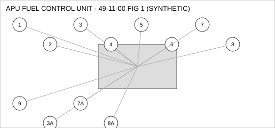
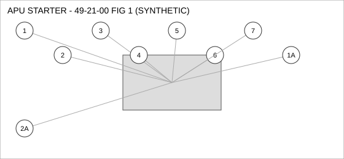
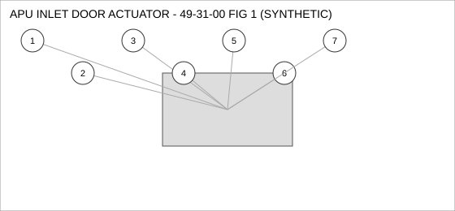
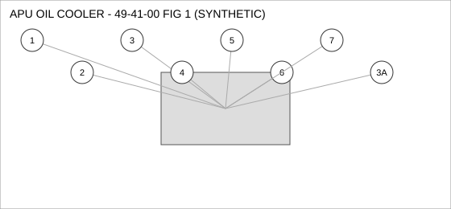

Document type: IPC | Revision: 15 | Fleet: B737
| CODE | AIRCRAFT |
|---|---|
| A | 737-700 |
| B | 737-800 |
| C | 737-MAX8 |

| FIG ITEM | PART NUMBER | NOMENCLATURE | EFFECT | UPA |
|---|---|---|---|---|
| 1 | 285-58096-13 | VALVE - SHUTOFF, APU FUEL CONTROL UNIT | ALL | 1 |
| 2 | 60-13396-24 | FITTING - ELBOW, APU FUEL CONTROL UNIT | ALL | 1 |
| 3 | 285-25435-09 | FILTER ELEMENT, APU FUEL CONTROL UNIT | ALL | 1 |
| 3A | 69-62187-23 | FILTER ELEMENT, APU FUEL CONTROL UNIT | C | 1 |
| INTERCHANGEABLE WITH 285-25435-09 - 737-MAX8 ONLY. | ||||
| 4 | 285-47431-23 | BOLT, APU FUEL CONTROL UNIT | ALL | 2 |
| 5 | 60-69250-06 | PUMP - TRANSFER, APU FUEL CONTROL UNIT | ALL | 2 |
| 6 | 69-97535-12 | GASKET, APU FUEL CONTROL UNIT | A B | 1 |
| 7 | 69-30644-23 | HOSE ASSEMBLY, APU FUEL CONTROL UNIT | ALL | 1 |
| 7A | 60-68979-15 | HOSE ASSEMBLY, APU FUEL CONTROL UNIT | B C | 1 |
| INTERCHANGEABLE WITH 69-30644-23 - 737-800, 737-MAX8 ONLY. | ||||
| 8 | 60-36342-26 | SWITCH - PRESSURE, APU FUEL CONTROL UNIT | ALL | 1 |
| 8A | 285-33850-25 | SWITCH - PRESSURE, APU FUEL CONTROL UNIT | B C | 1 |
| INTERCHANGEABLE WITH 60-36342-26 - 737-800, 737-MAX8 ONLY. | ||||
| 9 | 60-57303-18 | COUPLING - QUICK DISCONNECT, APU FUEL CONTROL UNIT | A B | 4 |

| FIG ITEM | PART NUMBER | NOMENCLATURE | EFFECT | UPA |
|---|---|---|---|---|
| 1 | 65-55353-17 | SENSOR - PRESSURE, APU STARTER | B C | 1 |
| 1A | 162-48985-15 | SENSOR - PRESSURE, APU STARTER | A B | 1 |
| ALTERNATE FOR 65-55353-17 ON 737-800 ONLY. | ||||
| 2 | 285-45972-05 | WASHER - LOCK, APU STARTER | ALL | 1 |
| SUPERSEDED BY 162-36741-11 | ||||
| 2A | 162-36741-11 | WASHER - LOCK, APU STARTER | ALL | 1 |
| SUPERSEDES 285-45972-05. 285-45972-05 IS NOT INTERCHANGEABLE WITH THIS PART (ONE-WAY). | ||||
| 3 | 285-94015-06 | FILTER ELEMENT, APU STARTER | ALL | 4 |
| 4 | 285-89316-11 | DUCT - FLEXIBLE, APU STARTER | ALL | 4 |
| 5 | 60-20646-02 | SEAL - O-RING, APU STARTER | A B | 4 |
| 6 | 285-64602-20 | GASKET, APU STARTER | C | 1 |
| 7 | 285-47967-21 | ACTUATOR - LINEAR, APU STARTER | B C | 1 |

| FIG ITEM | PART NUMBER | NOMENCLATURE | EFFECT | UPA |
|---|---|---|---|---|
| 1 | 162-42495-05 | PUMP - TRANSFER, APU INLET DOOR ACTUATOR | ALL | 1 |
| 2 | 162-90658-14 | WASHER - LOCK, APU INLET DOOR ACTUATOR | ALL | 1 |
| 3 | 285-50988-07 | GASKET, APU INLET DOOR ACTUATOR | A B | 1 |
| 4 | 162-75373-29 | SENSOR - PRESSURE, APU INLET DOOR ACTUATOR | A | 1 |
| 5 | 162-76249-15 | ACTUATOR - LINEAR, APU INLET DOOR ACTUATOR | ALL | 1 |
| 6 | 60-16624-10 | CLAMP - V-BAND, APU INLET DOOR ACTUATOR | ALL | 2 |
| 7 | 162-47453-18 | BOLT, APU INLET DOOR ACTUATOR | B C | 1 |

| FIG ITEM | PART NUMBER | NOMENCLATURE | EFFECT | UPA |
|---|---|---|---|---|
| 1 | 69-91689-22 | PUMP - TRANSFER, APU OIL COOLER | A B | 4 |
| 2 | 60-61629-12 | GASKET, APU OIL COOLER | ALL | 1 |
| 3 | 65-36090-20 | DUCT - FLEXIBLE, APU OIL COOLER | B C | 4 |
| 3A | 69-53416-22 | DUCT - FLEXIBLE, APU OIL COOLER | A B | 4 |
| INTERCHANGEABLE WITH 65-36090-20 - 737-800 ONLY. | ||||
| 4 | 60-15100-05 | SENSOR - TEMPERATURE, APU OIL COOLER | ALL | 1 |
| 5 | 65-89463-29 | SWITCH - PRESSURE, APU OIL COOLER | ALL | 4 |
| 6 | 285-51750-06 | WASHER - LOCK, APU OIL COOLER | ALL | 2 |
| 7 | 69-87820-11 | BOLT, APU OIL COOLER | C | 4 |